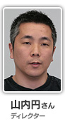
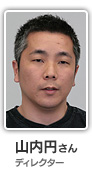
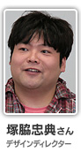
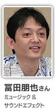
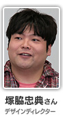
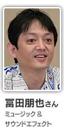

 

『やりこみ要素』という言葉が出ましたが、どういったものがあるんですか？
まずは先ほどお話したひとつのステージの中に「ミッション」と呼ばれる目的があります。ゴールはひとつなんですが、ミッションを含めて最終目的が複数あるっていうのが、今回のゲームの特徴なんですね。ひとつのステージでも、何度も楽しんで頂けると思います。普通にプレイするとゴールまではたどり着けるけれども、ミッションも同時にクリアするとなると歯ごたえあるアクションゲームになる。アクションゲームが初めての方から得意な方まで、幅広い層に遊んでいただけるようにとステージを構成していますね。
ステージ構成に関しては、本当に計算されているんですが、そのために開発途中のバージョンでは、最初のステージから難しくなってしまっている部分もありました。最終的には、初めてアクションゲームを遊ばれる方にも楽しめるよう、終盤の難しさはそのままに、序盤の難易度を調整しています。
その他には、タイムアタックですね。ステージの後半で「メルフル」というキャラを救出するとカウントダウンが始まって、レースゲームっぽくなるんですよ。コンマ何秒の戦いで。隠しステージで「サバンヌー」というステージがあるんですけど、そのタイムアタックがかなり熱いですね。

制作中はそればっかりやってましたね(笑)。これがまた、松宮さんがとんでもないタイムを叩き出すんですよ。「これは有り得ない！」「どうやってんだ？」と。
いやいや（笑）
"メルフルを助けて帰る"というのが今回の特徴ですから、救出してからどれだけ速く帰れるかというのは、やりこみ要素の一番のポイントと思ってます。
ステージには、意外なところに道があったりしますよね。プレイヤーが気付かないようなところに作ったりもしたんですか？
これがまた、裏をかきすぎて修正したりもあったんです。楽しんでもらうというのが前提にありますからね。
「もしかしてあっちへ行ったらいいんじゃないか」と進んだら、思った通りだった、というのが気持ちいいですからね。ステージ構成はその辺も心がけています。
他にも「お宝」を集めるという要素がありまして。このお宝のアイデアは一晩、塚脇の家で合宿をしました。鍋をつつきながら、ボツネタ含めて１００個以上作りまして。

みんなで言いながら飲み食いしながら、そして描きながら朝までと(笑)。
塚脇の描くペースが速くて。アイデアを出すよりも速いくらいでしたね。それで、朝の５時６時までやってたんですけど、途中でみんなどんどん倒れていくんですよ(笑)。
昼間が会社の引っ越しの日で(編註：このソフトを制作している期間でグッド・フィールさんは２度のお引っ越しをされたそうです)、その疲れの勢いでそのまま僕の家に来て合宿やるぞーってなって。疲れているときこそ、と(笑)。
疲れの勢いって、すごいですね。
瀬井が携帯にメモをしてるんですよ。なんでも気付いたことを書きとめてて、序盤はそれをずっと読み上げていくんです。それで、みんなが「大体こういうラインでいいんだ」と認識した上で、ばーっと出していって。
一緒に働いているスタッフの新たな一面がそこで見えたりもしましたね。すごく真面目な人が、イメージにあわないネタを出したりとか(笑)。お宝は各ステージに３つずつ隠していますので、ぜひ見つけ出してください。